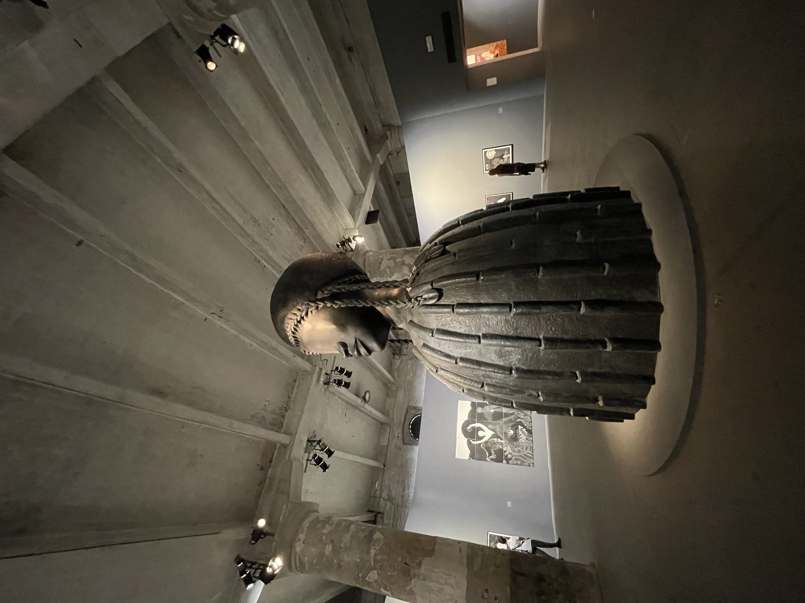
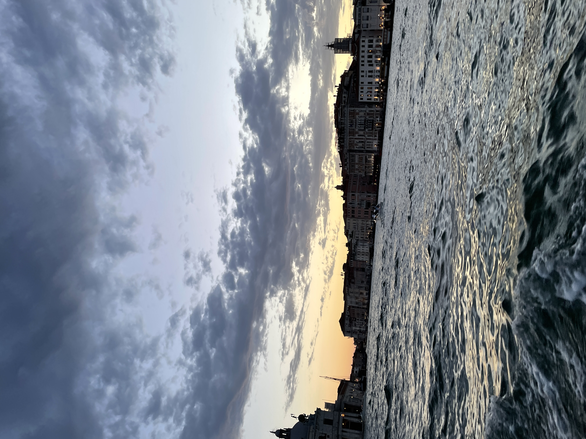

Sant'Elena, Venice
Packed day today.
Had Biennale discussion in the morning,
then ate lunch w/ Olivia
and picked up sketchbooks before heading to Arsenale.

The artwork was insane.
We saw such a well curated show.
Our prof was able to show us thematic threads throughout each room
and I have a newfound appreciation for contemporary art.
I'm excited to go back and take a closer look at everything.
Then we went to Ocean Space's event where we went to a
park on the mainland and talked about detecting pollution in clams.

Beautiful sunset, long trip back, and Olivia and I decided to
get
takeout food
& aperol spritzes
and sit by the river to eat dinner.
It was so nice to talk to her about anything.